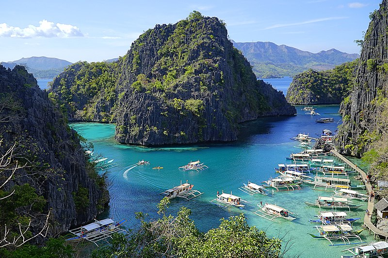
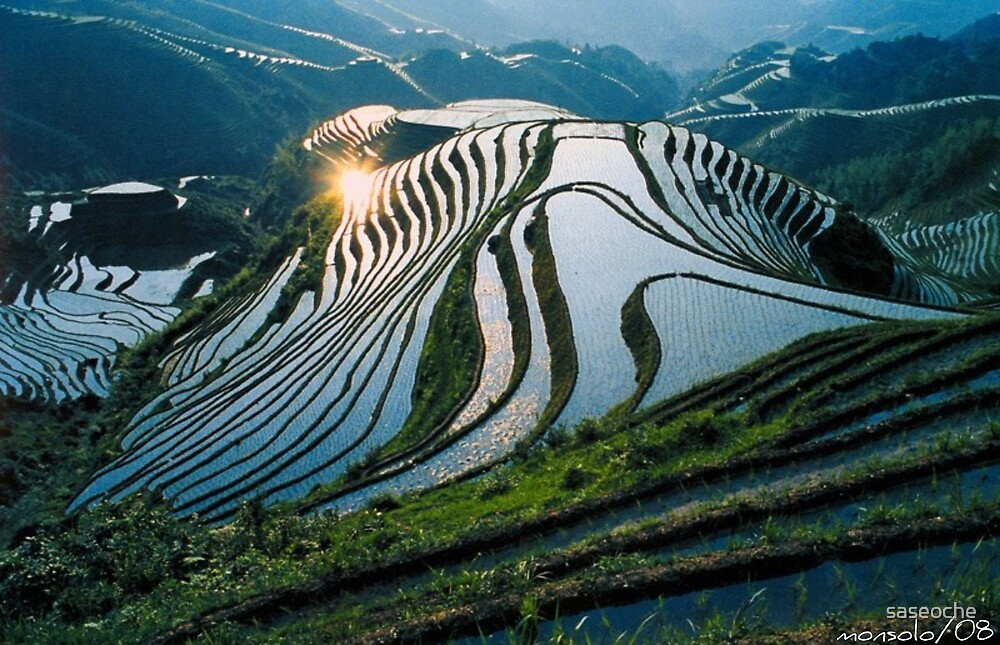

The Philippines is an archipelago located in Southeast Asia, made up of over 7,000 islands scattered across the Pacific Ocean. The country's unique geographical characteristics provide it with beautiful stretches of white sand beaches bordered by clear waters.
In fact, numerous islands and beaches in the Philippines, such as Boracay, Palawan,and Siargao, have repeatedly been recognized as some of the best in the world by prominent travel publications.
However, the Philippines offers much more than just a picturesque tropical setting for island-hopping and beach activities.
BORACAY

Boracay Island is a tropical haven that draws millions of visitors annually with its soft white sand, clear turquoise waters, and lively nightlife. Whether you seek to unwind on the beach, partake in water sports, or discover the island's natural beauty, Boracay offers a variety of activities for everyone. However, Boracay is just one of the treasures in Aklan province, which is steeped in history and culture.
PALAWAN
Palawan is an archipelagic province in the Philippines, situated in the Mimaropa region. Covering a total area of 14,649.73 km² (5,656.29 sq mi), it is the largest province in the country. The capital and largest city, Puerto Princesa, is geographically part of Palawan but is administered independently. Palawan is often referred to as the Philippines' Last Frontier and has been recognized as the country’s Best Island.
BANAUE RICE TERRACES
The Banaue Rice Terraces, located in Ifugao, Philippines, were sculpted into the mountains by the ancestors of the Igorot people. Often referred to as the "Eighth Wonder of the World," these terraces are believed to have been constructed primarily by hand with minimal tools. They sit at an elevation of about 1,500 meters (4,900 feet) above sea level.